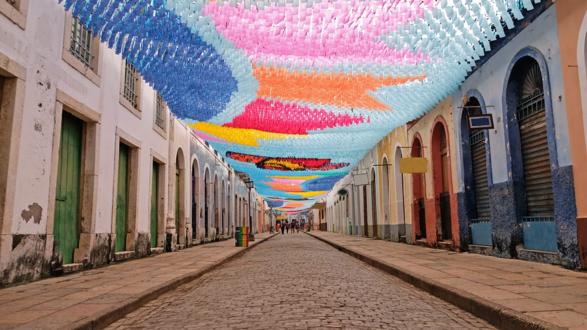

São Luis do Maranhão
Visite
Sobre
São Luís, frequentemente chamada de São Luís do Maranhão, é um município brasileiro e a capital do estado do Maranhão. Sua história é rica e multifacetada, com mais de 400 anos de existência. Aqui estão alguns destaques sobre essa cidade encantadora:
Fundação e Colonização
- São Luís foi fundada por franceses em 8 de setembro de 1612, tornando-se a única capital brasileira com origens francesas.
- Posteriormente, a cidade foi invadida por holandeses e, finalmente, colonizada pelos portugueses.
Localização Geográfica
- Situa-se na ilha de Upaon-Açu, no Atlântico Sul, entre as baías de São Marcos e São José de Ribamar.
- Seu litoral estrategicamente posicionado a torna um ponto importante para o comércio exterior, especialmente pelo Porto do Itaqui, o segundo mais profundo do mundo.
Patrimônio Cultural
- Em 1997, o Centro Histórico de São Luís foi declarado patrimônio cultural da humanidade pela UNESCO.
- Suas ruas de paralelepípedos, arquitetura colonial e monumentos históricos bem preservados atraem visitantes de todo o mundo.
População e Área
- Com uma população estimada de mais de 1 milhão de habitantes, São Luís é o município mais populoso do Maranhão e o quarto da Região Nordeste.
- Sua área total é de 583 km², dos quais 166 km² estão dentro do perímetro urbano.
Pontos Turísticos
Centro Histórico: O Centro Histórico de São Luís é um verdadeiro tesouro. Suas ruas de paralelepípedos, casarões coloniais e igrejas antigas são um convite para explorar a história da cidade1
Palácio dos Leões: Majestoso como um leão, o Palácio dos Leões é a sede do governo do estado do Maranhão. Sua arquitetura imponente é um destaque na paisagem da cidade
Teatro Arthur Azevedo: Com um lustre deslumbrante, o Teatro Arthur Azevedo é um local cultural importante. Vale a pena conferir sua programação e apreciar sua beleza
Espigão Costeiro: Um dos principais pontos turísticos da capital, o Espigão Costeiro oferece vistas incríveis do mar e é um ótimo lugar para apreciar o pôr do sol maranhense
Igreja da Sé Nossa Senhora da Vitória: Com um altar riquíssimo, a Igreja da Sé é um marco histórico e religioso em São Luís
Galeria de Fotos
Confira algumas belíssimas imagens da cidade na galeria abaixo: